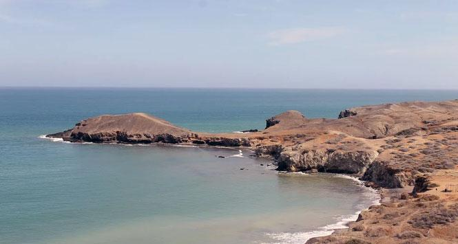
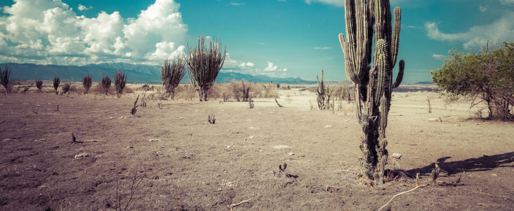

La Alta Guajira esta en la región septentrional del departamento, mayoritariamente cubierta por suelos desérticos y donde está concentrada la mayoría de la población wayúu. Abarca el territorio peninsular propiamente dicho, donde se localizan el Cabo de la Vela, Punta Gallinas, Bahía Honda y la Serranía de la Macuira, pertenecientes a Uribia, el único municipio de la región, considerado a su vez como la capital indígena de Colombia.
El desierto puede ser tenido como un paisaje uniforme y por extensión predecible: solo arena. Pero en el desierto de la Alta Guajira viven animales, bien adaptados a su entorno, que no se encuentran en otros ecosistemas. La flora está capacitada para vivir con poca o ninguna fuente de agua. Algo llamativo sobre esta región es la presencia de playas solitarias, lo que se debe a la poca presencia de centros urbanos cerca del litoral.
